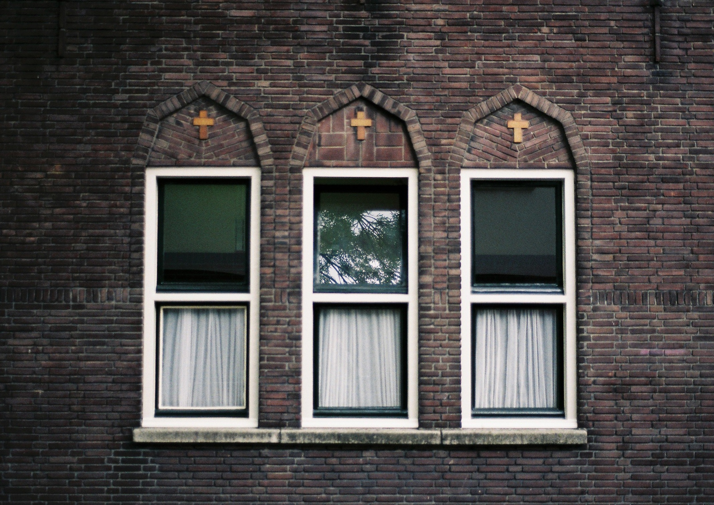

Caught on film
Welcome to my portfolio website. This is the first website I have ever built and it was a real challenge, but it was the most fun challenge I've had in a long time. I decided to build a portfolio to showcase my photography so I could learn to code while I build something fun for myself. Hopefully you'll enjoy looking at some of my photography work as well as looking at the site itself.